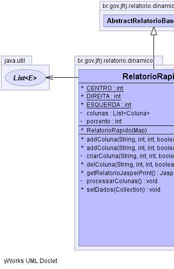
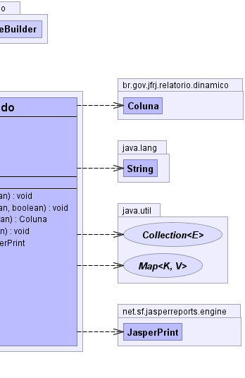

ar.com.fdvs.dj.domain.builders.DynamicReportBuilder
br.gov.jfrj.relatorio.dinamico.AbstractRelatorioBaseBuilder
br.gov.jfrj.relatorio.dinamico.RelatorioRapido
ar.com.fdvs.dj.domain.builders.DynamicReportBuilder
br.gov.jfrj.relatorio.dinamico.AbstractRelatorioBaseBuilder
br.gov.jfrj.relatorio.dinamico.RelatorioRapido
|
|||||||||
| PREV CLASS NEXT CLASS | FRAMES NO FRAMES | ||||||||
| SUMMARY: NESTED | FIELD | CONSTR | METHOD | DETAIL: FIELD | CONSTR | METHOD | ||||||||
java.lang.Object
public class RelatorioRapido
Permite a geração rápida de relatórios. Basta o cliente desta classe seguir
os seguintes passos:
1) Instanciar esta classe
2) Adicionar colunas com o método .addColuna()
3) Injetar os dados no relatório com o método .setDados()
4) Executar o método .getRelatorio() e passar o seu retorno para um viewer
(Ex: JasperViewer.viewReport ou JasperExportManager.exportReportToPdfStream)
Os dados para este tipo de ralatório devem ser Set ou List.
Use a classe RelatorioTemple para agilizar/padronizar o procedimento acima.
|  |  |
| Field Summary | |
|---|---|
static int |
CENTRO
|
private java.util.List<Coluna> |
colunas
|
static int |
DIREITA
|
static int |
ESQUERDA
|
private int |
porcento
|
| Fields inherited from class br.gov.jfrj.relatorio.dinamico.AbstractRelatorioBaseBuilder |
|---|
dr, ds, estiloColuna, estiloSubtitulo, estiloTitulo, estiloTituloColuna, estiloTituloGrupo, parametros |
| Fields inherited from class ar.com.fdvs.dj.domain.builders.DynamicReportBuilder |
|---|
autoTexts, concatenatedReports, globalFooterCrosstabs, globalHeaderCrosstabs, globalVariablesGroup, groupFooterSubreports, groupHeaderSubreports, options, report |
| Constructor Summary | |
|---|---|
RelatorioRapido(java.util.Map parametros)
|
|
| Method Summary | |
|---|---|
void |
addColuna(java.lang.String titulo,
int tamanho,
int alinhamento,
boolean isAgrupado)
Adiciona uma coluna ao relatório. |
void |
addColuna(java.lang.String titulo,
int tamanho,
int alinhamento,
boolean isAgrupado,
boolean isHyperlink)
|
private Coluna |
criarColuna(java.lang.String titulo,
int tamanho,
int alinhamento,
boolean isAgrupado)
|
void |
delColuna(java.lang.String titulo,
int tamanho,
int alinhamento,
boolean isAgrupado)
|
net.sf.jasperreports.engine.JasperPrint |
getRelatorioJasperPrint()
Método que retorna o relatório no formato JasperPrint. |
private void |
processarColunas()
|
void |
setDados(java.util.Collection dados)
Configura os dados que serão exibidos no relatório com Query. |
| Methods inherited from class br.gov.jfrj.relatorio.dinamico.AbstractRelatorioBaseBuilder |
|---|
copiarEstilo, setDadosColecaoMap |
| Methods inherited from class ar.com.fdvs.dj.domain.builders.DynamicReportBuilder |
|---|
addAutoText, addAutoText, addAutoText, addAutoText, addAutoText, addAutoText, addAutoText, addChart, addColumn, addConcatenatedReport, addConcatenatedReport, addConcatenatedReport, addConcatenatedReport, addConcatenatedReport, addField, addFirstPageImageBanner, addFont, addFooterCrosstab, addGlobalFooterVariable, addGlobalFooterVariable, addGlobalFooterVariable, addGlobalHeaderVariable, addGlobalHeaderVariable, addGroup, addHeaderCrosstab, addImageBanner, addParameter, addResourceBundle, addStyle, addSubreportInGroupFooter, addSubreportInGroupFooter, addSubreportInGroupFooter, addSubreportInGroupFooter, addSubreportInGroupFooter, addSubreportInGroupFooter, addSubreportInGroupFooter, addSubreportInGroupHeader, addSubreportInGroupHeader, addSubreportInGroupHeader, addSubreportInGroupHeader, addSubreportInGroupHeader, addSubreportInGroupHeader, addSubreportsToGroups, build, concatenateReports, setAllowDetailSplit, setBottomMargin, setBottomMargin, setColumnSpace, setColumnSpace, setColumnsPerPage, setColumnsPerPage, setColumnsPerPage, setColumnsPerPage, setDefaultStyles, setDetailHeight, setDetailHeight, setFooterHeight, setFooterHeight, setGlobalFooterVariableHeight, setGlobalHeaderVariableHeight, setGrandTotalLegend, setGrandTotalLegendStyle, setHeaderHeight, setHeaderHeight, setIgnorePagination, setLeftMargin, setLeftMargin, setMargins, setOddRowBackgroundStyle, setPageSizeAndOrientation, setPrintBackgroundOnOddRows, setPrintBackgroundOnOddRows, setPrintColumnNames, setProperty, setQuery, setReportLocale, setReportName, setRightMargin, setRightMargin, setSubtitle, setSubtitleHeight, setSubtitleStyle, setTemplateFile, setTemplateFile, setTitle, setTitleHeight, setTitleStyle, setTopMargin, setTopMargin, setUseFullPageWidth, setUseFullPageWidth, setWhenNoData, setWhenNoData, setWhenNoDataAllSectionNoDetail, setWhenNoDataBlankPage, setWhenNoDataNoPages, setWhenNoDataShowNoDataSection, setWhenNoDataType, setWhenResourceMissing, setWhenResourceMissingLeaveEmptySpace, setWhenResourceMissingReturnNull, setWhenResourceMissingShowKey, setWhenResourceMissingThrowException |
| Methods inherited from class java.lang.Object |
|---|
clone, equals, finalize, getClass, hashCode, notify, notifyAll, toString, wait, wait, wait |
| Field Detail |
|---|
public static final int ESQUERDA
public static final int CENTRO
public static final int DIREITA
private java.util.List<Coluna> colunas
private int porcento
| Constructor Detail |
|---|
public RelatorioRapido(java.util.Map parametros)
throws ar.com.fdvs.dj.domain.builders.DJBuilderException
ar.com.fdvs.dj.domain.builders.DJBuilderException| Method Detail |
|---|
public void addColuna(java.lang.String titulo,
int tamanho,
int alinhamento,
boolean isAgrupado)
titulo - Título que aparece na coluna.tamanho - Tamanho da coluna na linha. Apesar de aceitar qualquer valor
inteiro, use entre 1 e 100 para se basear em porcentagem.alinhamento - Alinhamento dos dados da coluna. Pode ser:
public void addColuna(java.lang.String titulo,
int tamanho,
int alinhamento,
boolean isAgrupado,
boolean isHyperlink)
private Coluna criarColuna(java.lang.String titulo,
int tamanho,
int alinhamento,
boolean isAgrupado)
public void delColuna(java.lang.String titulo,
int tamanho,
int alinhamento,
boolean isAgrupado)
public net.sf.jasperreports.engine.JasperPrint getRelatorioJasperPrint()
throws net.sf.jasperreports.engine.JRException
AbstractRelatorioBaseBuilder
getRelatorioJasperPrint in class AbstractRelatorioBaseBuildernet.sf.jasperreports.engine.JRExceptionprivate void processarColunas()
public void setDados(java.util.Collection dados)
throws java.lang.Exception
AbstractRelatorioBaseBuilder
setDados in class AbstractRelatorioBaseBuilderdados - Os beans da consulta são usados para preencher o relatório.
Para essa modalidade funcionar corretamente, é necessário que o
relatório tenha seus campos com nomes idênticos aos métodos de acesso do bean.
Exemplo: Use setColumnProperty(nome,...) para um bean.getNome()
java.lang.Exception
|
|||||||||
| PREV CLASS NEXT CLASS | FRAMES NO FRAMES | ||||||||
| SUMMARY: NESTED | FIELD | CONSTR | METHOD | DETAIL: FIELD | CONSTR | METHOD | ||||||||